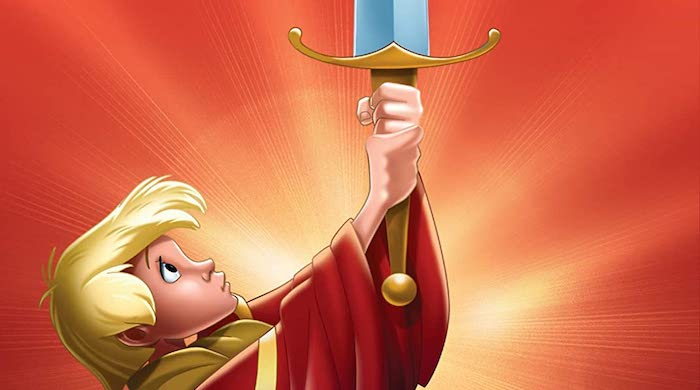

The Sword in the Stone

A poor boy named Arthur learns the power of love, kindness, knowledge and bravery with the help of a wizard called Merlin in the path to become one of the most beloved kings in English history.
Storyline
Arthur (aka Wart) is a young boy who aspires to be a knight's squire. On a hunting trip he falls in on Merlin, a powerful but amnesiac wizard who has plans for Wart beyond mere squiredom. He starts by trying to give Wart an education (whatever that is), believing that once one has an education, one can go anywhere. Needless to say, it doesn't quite work out that way.Details
Duration: 1h 19minRelease Date: December 25, 1963 (United States)
Genre: Animation · Family · Fantasy
Directors: Wolfgang Reitherman · David Hand
Starring: Rickie Sorensen · Karl Swenson · Sebastian Cabot